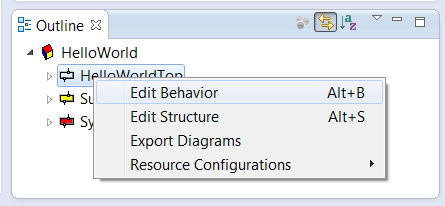

We will implement the Hello World code on the initial transition of the HelloWorldTop actor. Therefore open the state machine editor by right clicking the HelloWorldTop actor in the outline view and select Edit Behavior.

The state machine editor will be opened. Drag and drop an Initial Point from the tool box to the diagram into the top level state. Drag and drop a State from the tool box to the diagram. Confirm the dialogue with ok. Select the Transition in the tool box and draw the transition from the Initial Point to the State. Open the transition dialogue by double clicking the transition arrow and fill in the action code.
The result should look like this:
Save the diagram and inspect the model file. Note that the textual representation was created after saving the diagram.